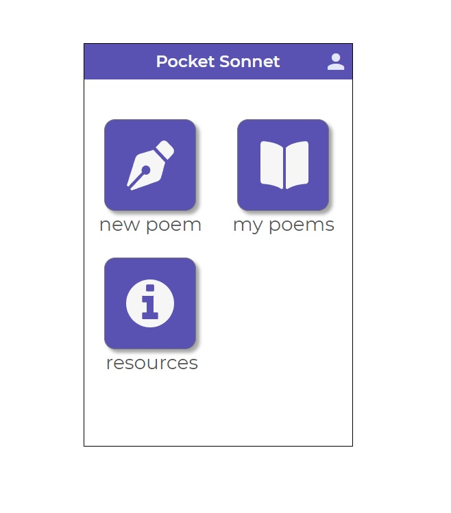
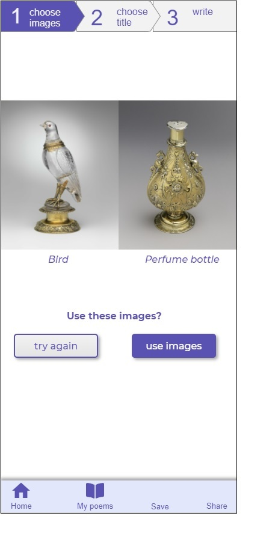
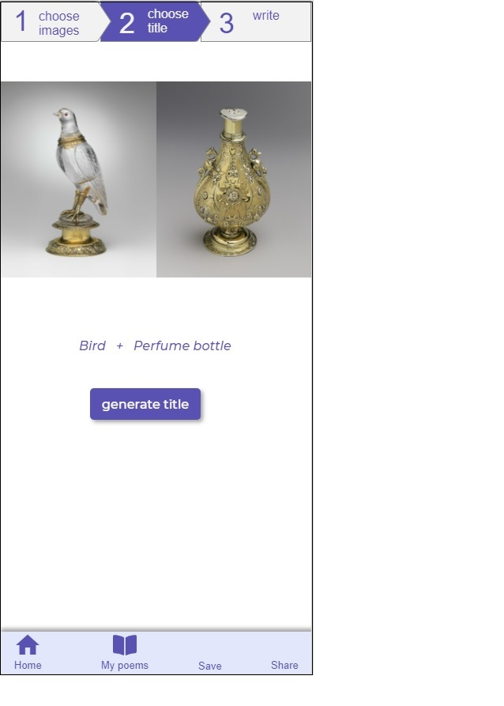
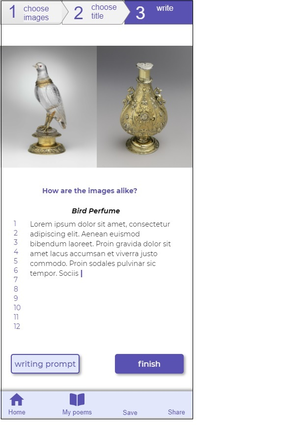
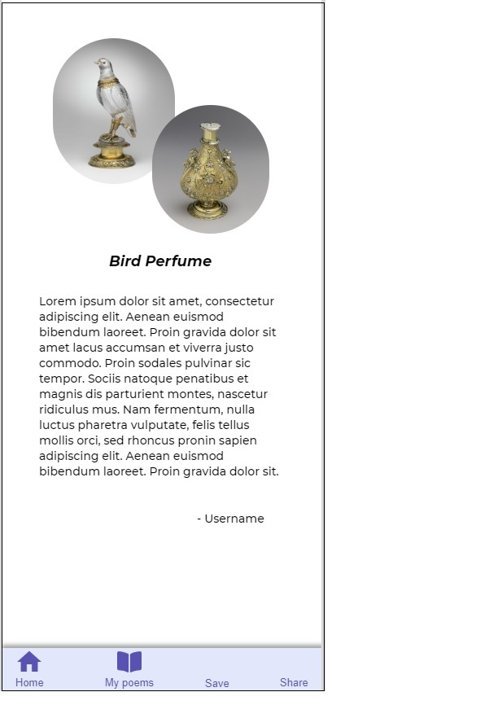

Mobile Sonnet
This project is a mobile application that helps users write sonnets and share their work with others.
Problem
Writing poems is often seen as an inaccessible task that requires special training or experience. Books about poems can use specialized terms, and many people are not in the habit of writing poems in their daily lives.
In addition, traditional types of poems, such as the sonnet, were created before the existence of digital technologies, and therefore were not designed to take advantage of capabilities such as image searches.
Solution
The Mobile Sonnet application walks users through the process of writing a poem. The app itself both enhances the poem and aids the composition process, by using functionalities native to the digital space.
Met Museum API
Using images and artwork titles from the Met Museum API, the app helps users develop their own unique ideas for their poem.
 Using the generated images and poem title, the user is guided to the composition space. If desired, the user can also employ a writing prompt.
The user can save their finished poem and share it with others.
